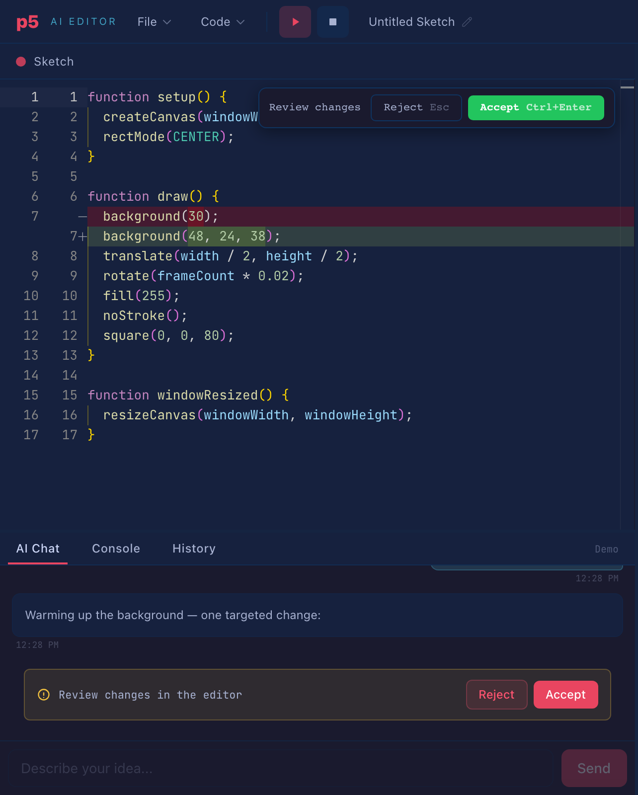
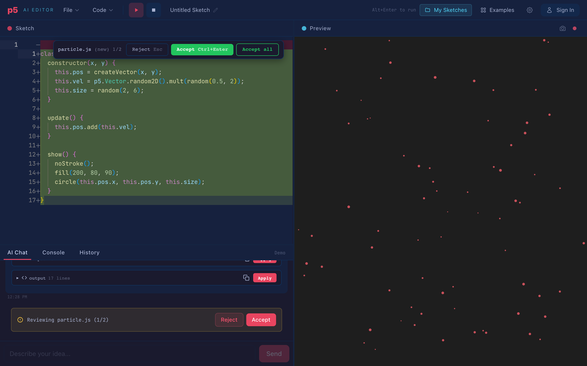

Section 1Why p5.js
If you have used Cursor or GitHub's Copilot Edits, you know the interaction: you describe a change in plain language and, instead of a wall of chat text, you get a diff. Green lines in, red lines out, accept or reject. I wanted to understand how that works under the hood, and reading about it wasn't going to be enough. I had to build one.
I didn't want to build it for general-purpose programming, though. That version of the problem is dominated by a question I find less interesting: how do you decide which parts of a large codebase to show the model? Whole companies exist to answer it. So I picked a domain where the question disappears: p5.js sketches.
Creative coding turns out to be a good laboratory for this. A sketch is one file, maybe a handful, a few hundred lines in total; the entire codebase fits in a single prompt, so there is no retrieval problem at all. Feedback is immediate and visual: if you asked for smaller particles and the particles got smaller, it worked, and you can tell without reading a line of the diff. And when an edit goes wrong, the cost is a rectangle in the wrong place rather than a production incident. You can afford to break things while you iterate on the editing machinery itself, which is the part I actually cared about.
The result is two things at once: a small creative-coding tool that is fun to use, and a scaled-down testbed for the same techniques the production AI editors use. All the interesting code adds up to about 600 lines of plain TypeScript. You can read it in a sitting.
Section 2What the thing is
Here is the app: Monaco (the editor inside VS Code) on the left, the running sketch on the right, chat below.

And the architecture behind it:
flowchart TB
subgraph Browser
direction LR
E[Monaco editor<br/>tabs + files] --> S[(Zustand store)]
C[AI chat] --> S
S --> P[Preview iframe<br/>sandboxed p5.js]
S --> D[Diff review<br/>accept / reject]
end
subgraph Backend["NestJS backend"]
direction LR
API[POST /api/chat<br/>SSE stream] --> PB[Prompt builder<br/>system + code + history]
PB --> PR[Provider adapters]
end
C -- "message + full sketch files" --> API
PR --> OAI[OpenAI]
PR --> ANT[Anthropic]
PR --> GRQ[Groq / demo]
PR --> DS[DeepSeek]
The frontend holds all the state (files, chat, undo history) in a Zustand store. The p5.js preview runs in a sandboxed iframe. The backend is a thin NestJS proxy that assembles the prompt, adapts it to each provider's API, and streams the response back over Server-Sent Events.
One early decision shaped everything after it: since sketches are small, the full code goes into every single request. No RAG, no embeddings, no relevance heuristics. Naively this is wasteful, and section 7 is about why it doesn't have to be, but it buys a great deal of simplicity everywhere else.
Section 3How should a model edit code?
A language model cannot reach into your editor and move the cursor. It can only emit text. So you need a contract between you and the model: when you want to change the code, express the change in this format, and I will apply it. Choosing that format is the central design problem of any AI editor, and the candidates trade off against each other:
| Format | Reliability | Token cost | Latency |
|---|---|---|---|
| Full-file rewrite | High: nothing to match | Worst: resends everything | Worst |
| Unified diff | Low: models hallucinate line numbers | Best | Best |
| Search/replace blocks | High: anchored on content, not positions | Good | Good |
A full-file rewrite is what raw ChatGPT gives you: the whole file again, with the change somewhere inside. Nothing can fail to apply, but you pay for 300 lines of output to change one, and you wait for all of them.
Unified diffs, the @@ -12,4 +12,6 @@ format git uses, are
compact but lean on line numbers, and models are unreliable at counting lines.
Aider's experiments found that models produce diffs with slightly wrong
numbers and malformed hunks often enough to matter; close, but a diff that is
close does not apply.[2]
Search/replace blocks sit in the middle: find this exact snippet, replace it with this one. No positions and no counting, only quoting, and quoting code they just read is something models do well. Aider's public benchmarks[1] settled on this format as the most reliable in practice, and it is what this project uses too.
Cursor went a different way, and it is worth knowing what you are choosing
not to do. Their main model emits a lazy edit, a sketch of the change with
// ... existing code ... markers, and a separate small model,
fine-tuned for exactly this job, merges it into the real file at around a
thousand tokens per second.[3] That is the
industrial answer: train a second model whose only task is merging. My
question for this project was how far prompt design plus client-side merging
can go without any custom model. The answer turned out to be: further than I
expected. The next six sections are the techniques that got it there.
Section 4 · Technique 1Two response formats, chosen by the model
The system prompt offers the model two ways to answer, along with the rule for choosing:
### Format A: full code (new sketches, major rewrites, >40% changes)
A single code block containing the COMPLETE file, first line to last.
### Format B: search/replace blocks (small targeted edits)
<<<SEARCH
background(240, 60, 8);
===
background(200, 80, 15);
>>>REPLACEFormat B does most of the work day to day. A one-line color tweak costs about 30 output tokens instead of a 300-line resend. Format A stays available for genuine rewrites ("start over with a flow field"), where a patch format would collapse into one enormous block covering the whole file anyway.
The model picks the format because the model is the only party that knows the scope of the change before writing it. The prompt gives it a threshold, roughly: patch below 40% of the file, rewrite above. Models follow it well.
This is what a search/replace block looks like by the time the user sees it. The raw block never appears in chat; it lands directly in the editor as an inline diff:

Two lines in that prompt deserve a closer look, because both are lies of a sort.
"The SEARCH text must match EXACTLY." It won't, not reliably. Models reconstruct code from attention over a long context and they drift: trailing whitespace, indentation, a stray semicolon. Technique 2 exists because of this.
"A code block must contain the COMPLETE file." Also not always true, no matter how firmly you phrase it. Weaker models send fragments anyway. Technique 3 exists because of that.
The stance I ended up with: the prompt defines the happy path, and the client assumes the model got things almost right rather than exactly right. Instructions are wishes. Reliability has to live in the code that receives the response.
Section 5 · Technique 2Cascading match tolerance
The obvious implementation of search/replace is indexOf: find
the SEARCH text, splice in the replacement. It works in a demo and fails
within a week, the first time the model remembers
background(30); but the file has a trailing space after it. Each
miss is costly out of proportion to its cause: the edit silently fails to
apply, the user asks again, and the token savings you chose this format for
are gone.
The fix, similar in spirit to how Aider's matching evolved,[1] is a cascade of increasingly tolerant tiers, applied per block:
flowchart TD
A[Search block] --> B{Exact substring<br/>match?}
B -- yes --> C[Replace first occurrence]
B -- no --> D{Per-line match,<br/>ignoring trailing<br/>whitespace?}
D -- "exactly 1" --> E[Splice replacement lines]
D -- no --> F{Per-line match,<br/>fully trimmed<br/>indent-insensitive?}
F -- "exactly 1" --> G[Re-indent replacement<br/>to the target, splice]
F -- "0 or >1" --> H[Fail the block:<br/>not found / ambiguous]
style H fill:#7a2b2b,color:#fff
The first tier is the fast exact path. The second forgives trailing whitespace, which is the most common drift. The third compares lines fully trimmed, forgiving indentation entirely. Each tier corresponds to a failure I actually observed in model output, not one I imagined.
Two decisions in this cascade matter more than the cascade itself.
First, the fuzzy tiers demand uniqueness. An exact match takes the first occurrence, since the model usually quotes enough surrounding context to be unambiguous. But a fuzzy match that hits two different places in the file refuses to choose between them and fails the block instead. The reasoning: an edit applied in the wrong place corrupts the sketch quietly, while an edit that visibly failed to apply is just a retry. Only one of those is dangerous.
Second, the trimmed tier re-indents. If the model wrote its block with two-space indentation and the file uses six, the replacement lines are shifted to match the file before splicing. The file stays consistent with itself even when the model's memory of it wasn't.
Section 6 · Technique 3The lazy fragment problem
This technique earned its place through a real failure. I asked a small
demo model for smaller particles, and it answered with a code block containing
only the loop it had changed. No setup(), no draw(),
just the four lines it was thinking about. The client, following the contract,
treated the block as Format A, a complete file, and replaced the entire sketch
with it. One keystroke turned a working sketch into two
ReferenceErrors.
The built-in history saved that sketch, but an undo button is not a defense strategy, so the incident became a technique.
This is precisely the problem Cursor's apply model is trained on.[3] A heuristic, client-side version gets closer than I expected. It has two halves.
Detection. A code block that claims to replace a file is flagged as a fragment if any of these hold:
- Its first non-empty line is indented. No complete file starts mid-scope.
- It targets the entry file but never declares
function setup(). Every complete p5.js sketch has one. (draw()deliberately isn't required; a static sketch legitimately has onlysetup().) - It targets a helper file, is under half that file's current size, and re-declares none of the file's top-level symbols. A legitimate rewrite keeps roughly the same shape; a fragment keeps neither the size nor the declarations.
Anchor merging. Once a fragment is detected, the right move is not to reject it. The model's edit is usually correct, just incomplete. So the client tries to place it:
flowchart LR
subgraph File["Existing file"]
L1["let plankton = [];"]
L2["function setup() {"]
L3[" for (let i...) { ◄ anchor"]
L4[" size: random(2, 6),"]
L5[" hue: random(...) ◄ anchor"]
L6[" }"]
L7["}"]
L8["function draw() {...}"]
end
subgraph Fragment
F1[" for (let i...) {"]
F2[" size: random(1, 3),"]
F3[" hue: random(...)"]
F4[" }"]
end
F1 -.match.-> L3
F3 -.match.-> L5
Fragment lines that appear exactly once in the file, compared trimmed,
become anchors: unique landmarks that pin the fragment to a location. If at
least two anchors map onto the file in the same order they appear in the
fragment, the spanned region of the file is replaced by the fragment. The
one-line change lands as a one-line diff and draw()
survives.
When no safe anchoring exists, the change is dropped entirely. A no-op beats a wipeout: the suggestion is still fully visible in the chat, where the user can apply it by hand or simply ask again. The philosophy is the same as the cascade's. When the system isn't sure, it declines loudly instead of guessing quietly.
Section 7 · Technique 4Token economics
Sending the full sketch on every turn is only viable if you stop paying full price for it. Left alone, a ten-turn conversation resends the same code ten times, and every assistant reply that quoted code gets resent inside the history as well; the same lines can appear five times in a single request. Three measures address this, in order of impact:
| Measure | What it does | Effect |
|---|---|---|
| History code-stripping | Older assistant messages get their code blocks replaced by a short placeholder note. The newest reply keeps its code so that "apply what you just suggested" still has a referent. | The same sketch stops appearing 4–5× per request |
| Prompt caching (Anthropic) |
Two cache_control breakpoints: one after the static
system prompt (always hits) and one after the code-context message
(hits while the sketch is unchanged between turns).[4] |
∼90% off the cached prefix |
| Predicted Outputs (OpenAI) |
The current code is passed as a prediction. A full
rewrite is a near-copy of it, so the API speculatively decodes against
the prediction instead of generating token by
token.[5] |
2–4× lower latency on rewrites |
flowchart LR
subgraph Request["Prompt assembly (per request)"]
SP["System prompt<br/>📌 cache breakpoint"] --> CC["Current sketch files<br/>📌 cache breakpoint"]
CC --> H["History (last 10)<br/>older code stripped"]
H --> M["New user message"]
end
The ordering in that diagram is the entire trick of prompt caching. Caching operates on a stable prefix, so the prompt is assembled most-stable-first: the system prompt never changes, the sketch changes only when you edit it, and the history changes every turn. Arranged that way, the expensive parts sit inside the cached region.
A caveat on Predicted Outputs: rejected prediction tokens bill at output rates, so the feature is a bet that pays off in edit-heavy sessions and costs a little in chat-heavy ones. It is also restricted to the model families that accept the parameter, and sending it to one that doesn't fails the whole request, so the client checks the model name first.
Section 8 · Technique 5Multi-file sketches and per-file review
Sketches outgrow a single file quickly. A Particle class
here, a palette module there, and suddenly the single-file editing flow faces
two questions it never had to answer.
The first: where does an edit land? Search/replace blocks carry an
optional // filename: prefix line, but models omit it, so when
the prefix is missing the target is resolved by content. Whichever file
actually contains the SEARCH text is the target, checking the active file
first, then the entry file, then any file with a unique match. The model has
no way of knowing which file you are looking at, but the code it quotes
identifies the file on its own. The quote serves as the address.
The second: how do you review an edit that spans three files? Stepping through three diffs before anything moves on screen would kill the creative loop, and seeing the result quickly is the entire point of the medium. So the flow works the way Cursor's multi-file edits do: every change is applied to the live preview immediately, and then you step through the files one at a time, at your own pace.

particle.js is new, shown all-green; the toolbar reads
"particle.js (new) 1/2" with an accept-all option, and the preview is
already running the proposed result.
stateDiagram-v2
[*] --> Applied: changes hit the preview
Applied --> Reviewing: file 1 of N
Reviewing --> Reviewing: Accept → next file<br/>Reject → revert this file, next
Reviewing --> Done: last file handled<br/>(or Accept all)
Done --> [*]: blocks marked applied/rejected,<br/>history recorded per file
Rejecting a file reverts only that file; a rejected brand-new file is deleted again. Accepting records a per-file history entry you can restore later. Because the preview shows the full proposed result the whole time, review becomes a visual judgment (do I like what I'm seeing?) rather than an act of faith in a diff.
Section 9 · Technique 6Streaming without burning the client
LLM responses arrive as a stream of small chunks, several per second. Two client-side details keep that pleasant instead of janky.
The first is showing the diff while it streams. As search/replace blocks arrive, they are applied leniently against the file on screen; blocks that don't match yet, because they are only half-arrived, are skipped without complaint. Monaco renders the in-progress diff, and you watch the edit take shape instead of staring at a spinner.
The second is throttling. The naive streaming loop re-parses the entire accumulated response and re-renders the diff on every chunk, which is quadratic work over the length of the response, spent at the exact moment the p5.js preview is trying to animate at 60fps. But chunks arrive every few milliseconds and eyes don't. One parse and render per 80 ms, with the first chunk shown immediately and the final state flushed atomically when the stream ends, removes the quadratic cost without any visible change in liveness.
Section 10What I took away
Three things, none of which I fully believed before building this.
Prompts propose, clients dispose. Every format rule in the system prompt gets violated by some model on some day. The reliability in this project came from client-side machinery (cascading matching, fragment detection, anchor merging) built on the assumption that the model got things almost right, and that the client's job is to close the last millimeter.
Refusing is a feature. The two best behaviors in the project are both refusals: fuzzy matches that decline to guess between two locations, and fragments that decline to apply without safe anchors. In an editor, wrong-and-confident is the only fatal failure mode. A visible refusal costs one retry; a silent corruption costs the user's trust.
p5.js is a genuinely good harness for this research. Instant visual verification turns every interaction into an evaluation. When the AI misplaces an edit, you don't read a stack trace. You watch the wrong thing rotate.
Next on the list: reporting failed search/replace blocks back to the model for a targeted retry, which Aider already does, and instrumenting how often each cascade tier and the fragment guard fire in real sessions.
Sources
- Aider, Edit format benchmarks. Why search/replace beats other formats in practice, measured across models.
- Aider, Unified diffs experiment. What happens when you ask LLMs for git-style diffs.
- Cursor, Near-instant full-file edits. The lazy-edit plus fine-tuned apply-model architecture.
- Anthropic, Prompt
caching. How
cache_controlbreakpoints work and what cached tokens cost. - OpenAI, Predicted Outputs. Speculative decoding against a known likely output.